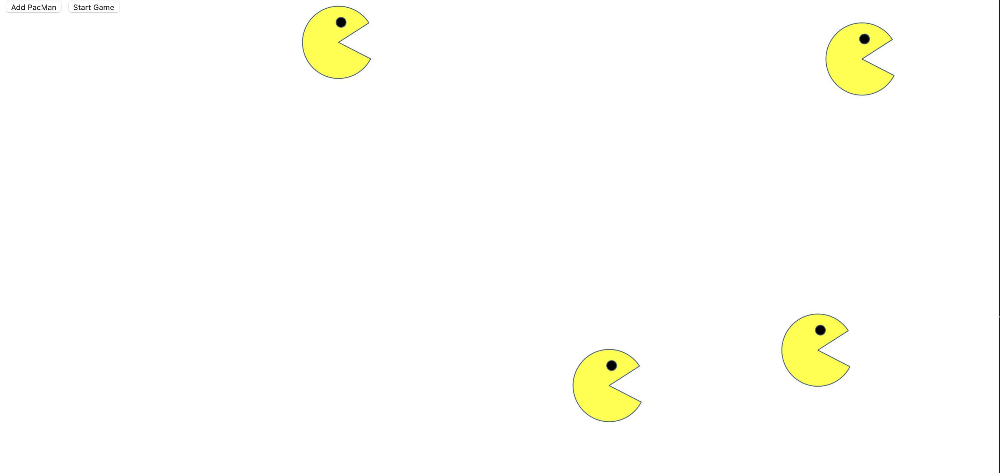

Pac-Man Exercise
Pac-Man Exercise showcases the use of JavaScript to launch Pac-men across the screen.
Pac-Man Repo
Eye Project
The eye project showcases the use of CSS and JavaScript to animate the "eyes" follow your mouse around the screen.
Eye Project Repo
Bus Map Project
Bus Map Project showcases the use of mapbox API within the code to show the stops between MIT and Harvard.
Bus Map Repo